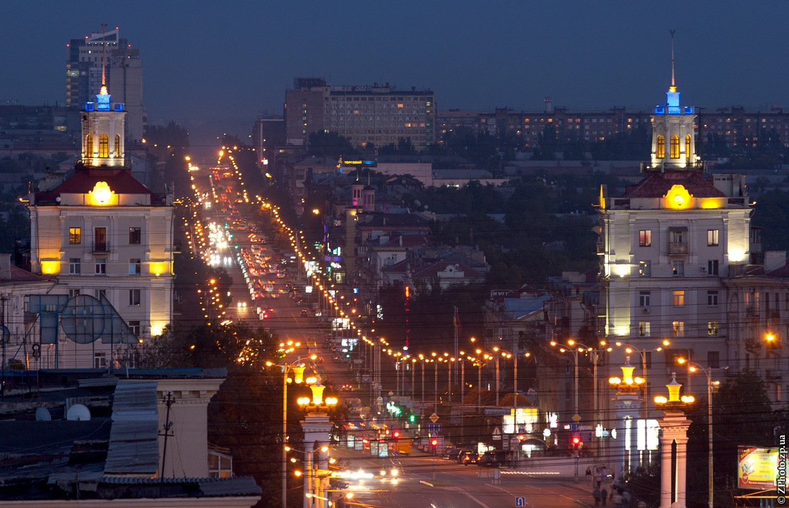

1 / 3

ДніпроГEС
2 / 3
Запорізька Січ
3 / 3

Проспект Соборний
mahachchan@gmail.com
| Предмет | Викладач | Оцінка |
| Методи оптимізації | Сімсон Е.А. | 98 |
| Рівняння математичної фізики | Курпа Л.В. | 92 |
| Теоретичні основи моделювання фізичних процесів ч.1 | Львов Г.І. | 85 |
| Кросплатформне прорграмування | Шаповалова М.І. | 90 |
Мрійлива, Спокійна, Добра
Як можна бути вільним, Евкріте, коли маєш тіло?
Анатоль Франс «Таїс»
Назва Місто отримало назву через розташування за гранітними скелями на Дніпрі – порогами.
Проспект Соборний В Запоріжжі один із найдовших у світі центральний проспект – 10,8 км.
ДніпрoГЕС У Запоріжжі має плотину вишиною у 50 м (приблизно як 15-поверховий будинок).